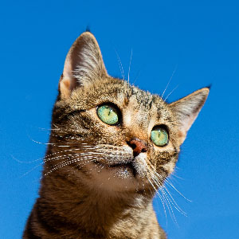
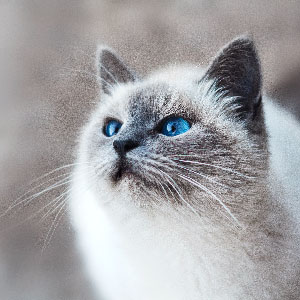

Good boy invents iPup, smartphone for canines
While Spot was learning to play fetch and Rover was rescuing people
stuck in wells, Daniel “Bark” Zhang was building the world's first
smartphone for dogs. The iPup is a paw-friendly mobile tablet
running Android “Beefcake”. Daniel says (through a dog translator)
that the idea struck him while peeing on a tree.
A secret balloon store in downtown Toronto
It's a quiet, unassuming building, with venetian blinds and spanish
masonry. Only the sharpest observer would notice the occasional
flash of colour from beyond the curtain, a glint of red and yellow
inflatables. Alabaster's Balloonery is possibly the country's most
understated party store, but outside appearances can be deceiving.
Though its red-brick facade has been left unchanged since it was
erected over 50 years ago, the interior has been renovated, bringing
a postmodern flourish that complements the colourful party supplies
quite nicely.

The $20 standing desk physiotherapists are obsessed with
If sitting is the new smoking, then standing desks are the new
nicotine patches. But most standing desks cost an arm and a leg.
This Vancouver startup is revolutionizing the office wellness
category.